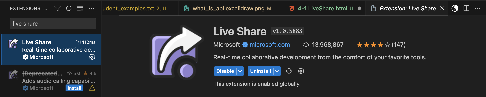
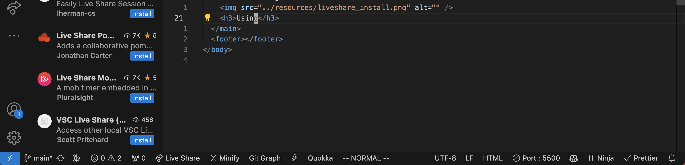
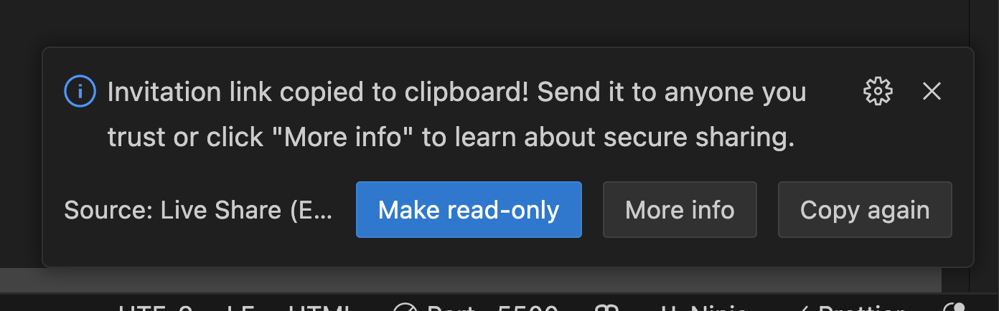

LiveShare Plugin
To work on assignments in pairs or small groups, the liveshare plugin can make pair programming remotely much easier.
You can work on the same files at the same time (saved locally on one persons computer).
Installing
NOTE: You need to have a GitHub account before you can use this extension.
Using
NOTE: Turn on your Live Server BEFORE running Live Share.
Click the liveshare button on the bottom of your IDE, from there you can copy an invite link to send to other students.
